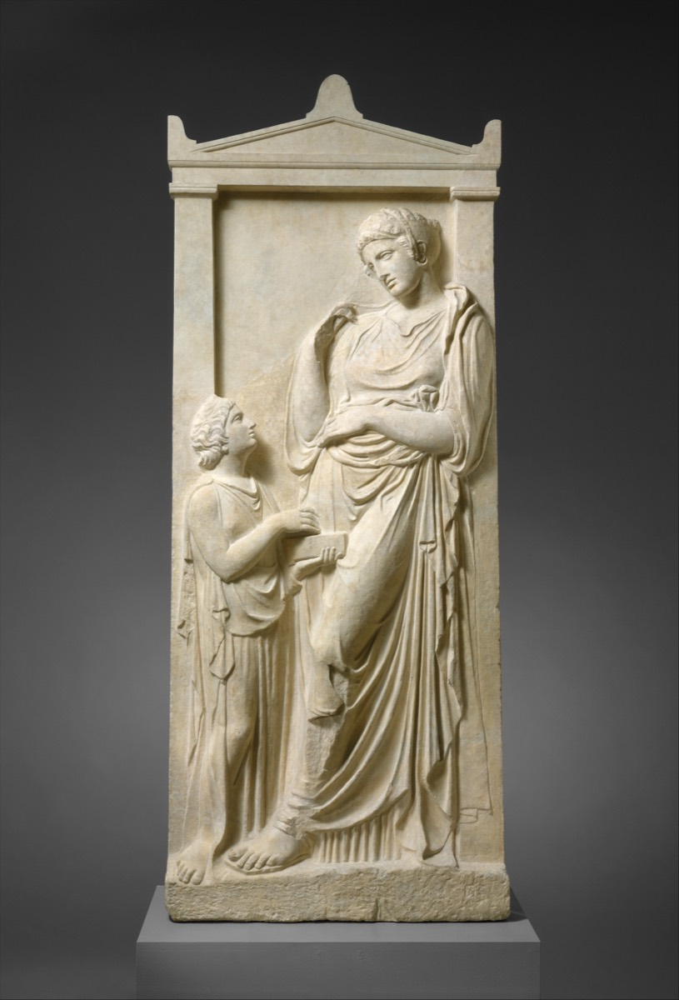

La maison
Pentelico è il marmo del monte Pentelico, in Attica. Fidia ci scolpì il fregio del Partenone. Grana finissima, e con gli anni una luce dorata.

Il motivo
Ogni pezzo parte da un disegno costruito per intero: una foglia d'acanto, una greca, un mascherone. Niente scansioni di monumenti, niente modelli di terzi.
Il rilievo
Il volume si costruisce a strati, poi comincia il lavoro vero: fondo, patina, pennello asciutto sui bordi in luce. Le ultime ore su ogni pezzo sono a mano, ed è la parte che decide se un rilievo respira o resta piatto.
Le serie
Le serie sono limitate e numerate sul fondo. Quando una finitura esce di catalogo, non rientra.
Su misura
Modello, motivo, finitura, minuteria e monogramma si compongono nel configuratore. Per una commissione fuori catalogo si scrive a clienti@pentelico.it.